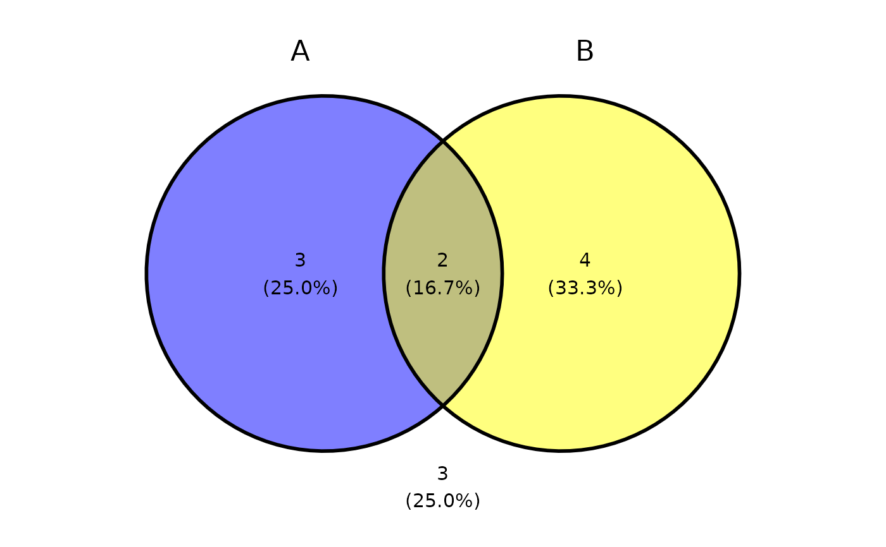
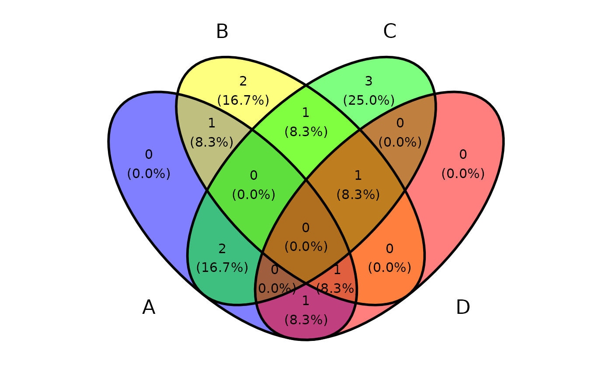
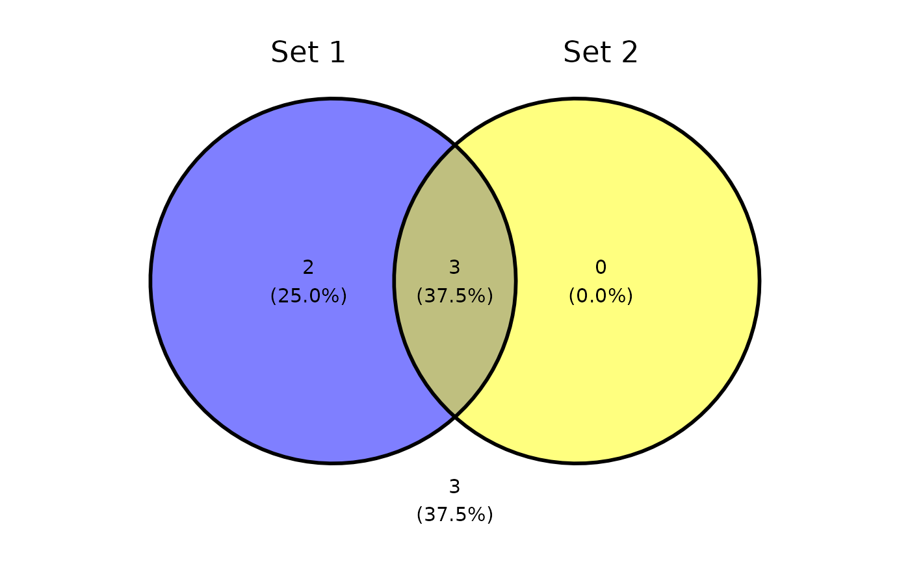
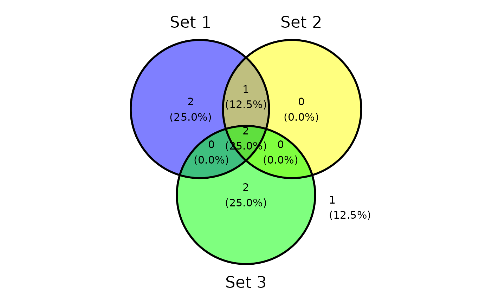
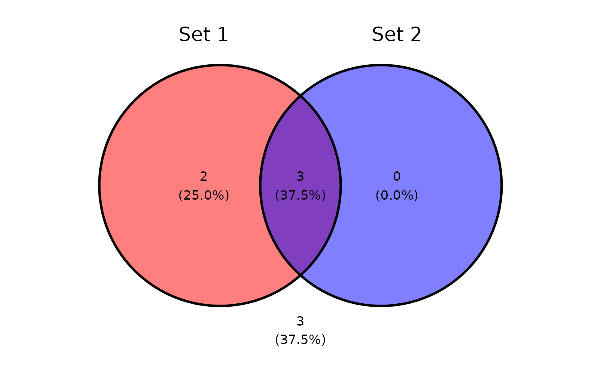
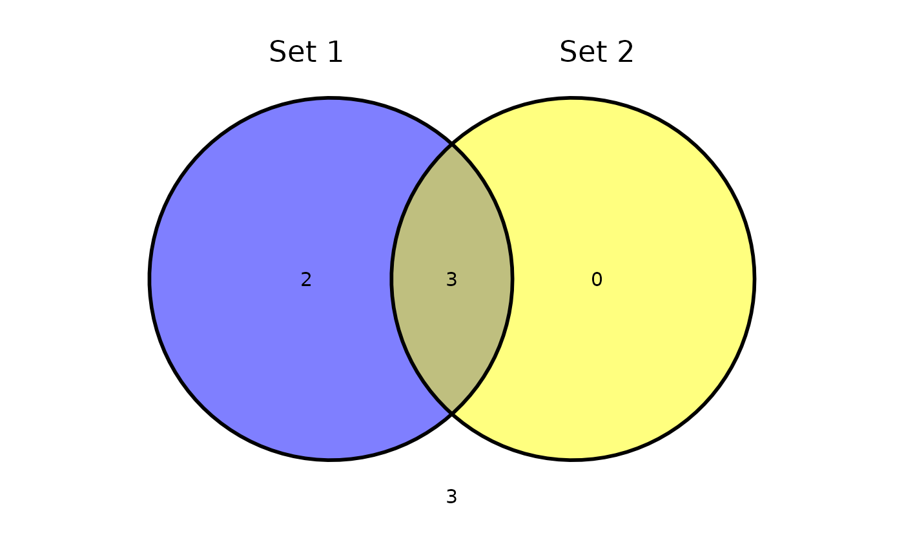
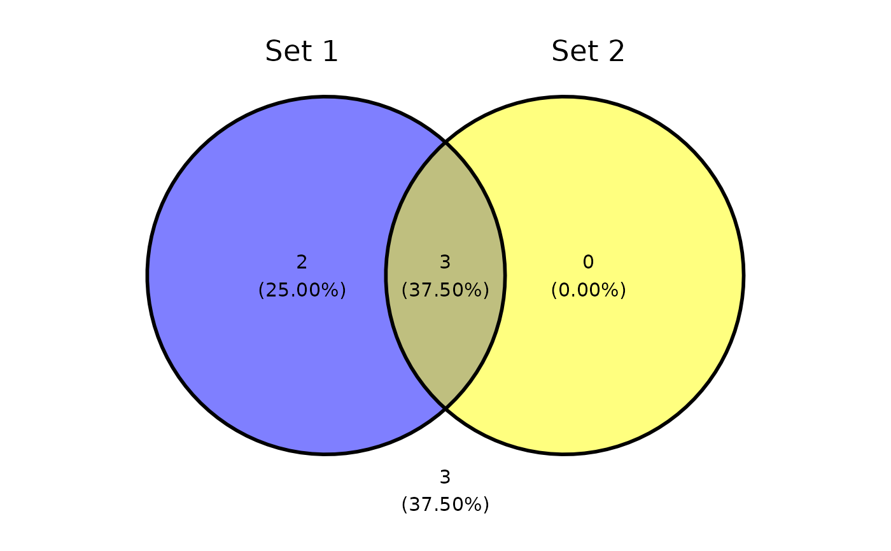
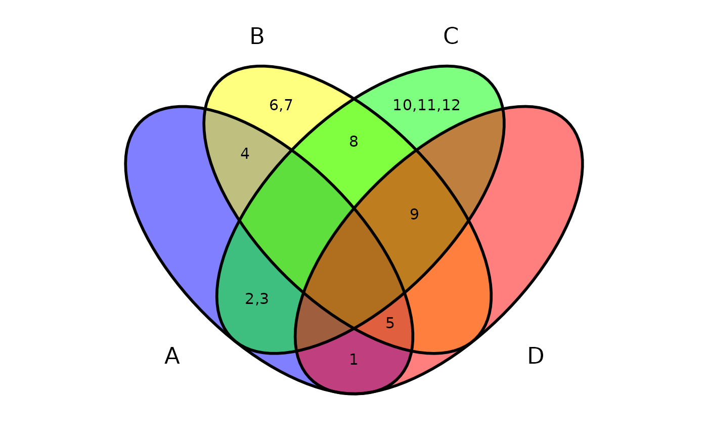
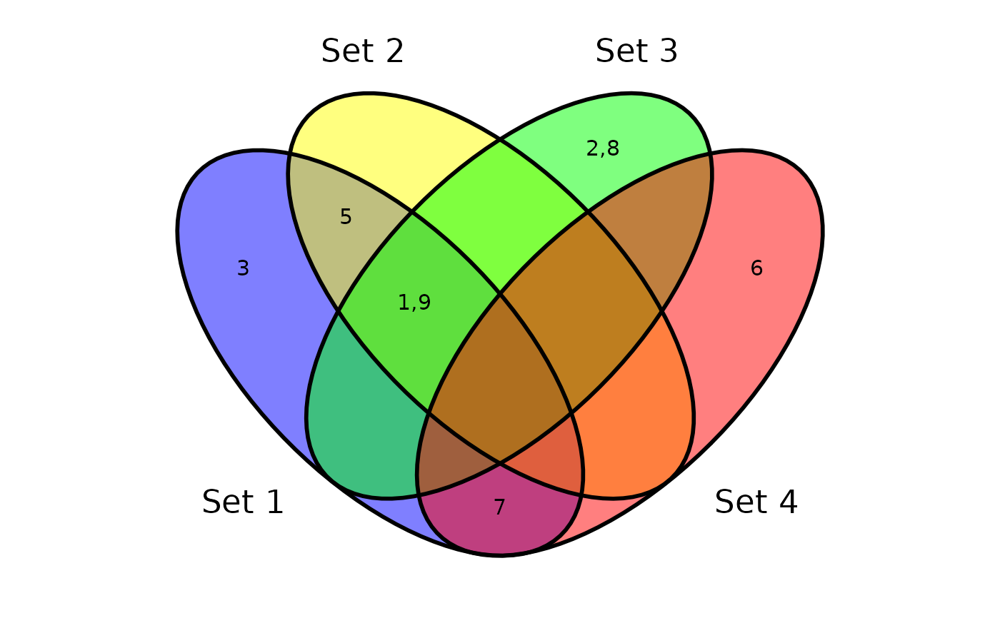

Plot venn diagram as an independent function. It supports both data frame and list as input.
Source:R/ggvenn.R
ggvenn.RdPlot venn diagram as an independent function. It supports both data frame and list as input.
Usage
ggvenn(
data,
columns = NULL,
element_column = NULL,
show_elements = FALSE,
show_set_totals = "none",
show_stats = c("cp", "c", "p"),
show_counts = TRUE,
show_percentage = TRUE,
digits = 1,
label_sep = ",",
count_column = NULL,
show_outside = c("auto", "none", "always"),
auto_scale = FALSE,
fill_color = default_color_list,
fill_alpha = 0.5,
stroke_color = "black",
stroke_alpha = 1,
stroke_size = 1,
stroke_linetype = "solid",
set_name_color = "black",
set_name_size = 6,
text_color = "black",
text_size = 4,
comma_sep = FALSE,
padding = 1,
max_elements = 6,
text_truncate = TRUE
)Arguments
- data
A data.frame or a list as input data.
- columns
A character vector use as index to select columns/elements.
- element_column
A single character value use as column name to select elements. It is only allowed when data is a data.frame.
- show_elements
Show set elements instead of count/percentage.
- show_set_totals
Show total count (c) and/or percentage (p) for each set. Pass a string like "cp" to show both. Any other string like "none" to hide both.
- show_stats
Show count (c) and/or percentage (p) for each set. Pass a string like "cp" to show both. Any other string like "none" to hide both.
- show_counts
Show count for each set.
- show_percentage
Show percentage for each set.
- digits
The desired number of digits after the decimal point.
- label_sep
Separator character for displaying elements.
- count_column
Specify column for element repeat count.
- show_outside
Show outside elements (not belongs to any set). Options: "auto", "none", "always".
- auto_scale
Allow automatically resizing circles according to element counts (only for 2-set diagrams).
- fill_color
Filling colors in circles. Can be a single color or a vector of colors for each set.
- fill_alpha
Transparency for filling circles. Can be a single value or a vector for each set.
- stroke_color
Stroke color for drawing circles. Can be a single color or a vector of colors for each set.
- stroke_alpha
Transparency for drawing circles. Can be a single value or a vector for each set.
- stroke_size
Stroke size for drawing circles. Can be a single value or a vector for each set.
- stroke_linetype
Line type for drawing circles. Can be a single value or a vector for each set.
- set_name_color
Text color for set names.
- set_name_size
Text size for set names.
- text_color
Text color for intersect contents.
- text_size
Text size for intersect contents.
- comma_sep
Whether to use comma as separator for displaying numbers.
- padding
Padding for the plot. Change this to allow longer labels to be displayed.
- max_elements
Maximum number of elements to display when show_elements=TRUE.
- text_truncate
Whether to truncate text when elements exceed max_elements.
Examples
library(ggvenn)
# use list as input
a <- list(A = 1:5, B = 4:9, C = c(2:3, 8:12), D = c(1, 5, 9))
ggvenn(a, c("A", "B"))

ggvenn(a, c("A", "B", "C"))
ggvenn(a)

# use data.frame as input
d <- dplyr::tibble(value = c(1, 2, 3, 5, 6, 7, 8, 9),
`Set 1` = c(TRUE, FALSE, TRUE, TRUE, FALSE, TRUE, FALSE, TRUE),
`Set 2` = c(TRUE, FALSE, FALSE, TRUE, FALSE, FALSE, FALSE, TRUE),
`Set 3` = c(TRUE, TRUE, FALSE, FALSE, FALSE, FALSE, TRUE, TRUE),
`Set 4` = c(FALSE, FALSE, FALSE, FALSE, TRUE, TRUE, FALSE, FALSE))
ggvenn(d, c("Set 1", "Set 2"))

ggvenn(d, c("Set 1", "Set 2", "Set 3"))

ggvenn(d)
# set fill color
ggvenn(d, c("Set 1", "Set 2"), fill_color = c("red", "blue"))

# hide percentage
ggvenn(d, c("Set 1", "Set 2"), show_stats = "c")

# change precision of percentages
ggvenn(d, c("Set 1", "Set 2"), digits = 2)

# show elements instead of count/percentage
ggvenn(a, show_elements = TRUE)

ggvenn(d, show_elements = TRUE, element_column = "value")
